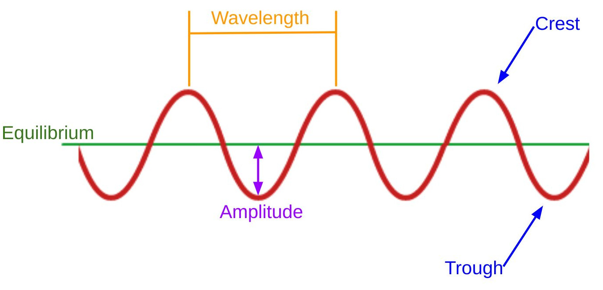

1. Simple Motion
1. Simple Motion 2. Accelerated Motion
2. Accelerated Motion 3. Projectile Motion
3. Projectile Motion 4. Newton's Laws
4. Newton's Laws 5. Momentum
5. Momentum 6. Energy
6. Energy 7. Heat
7. Heat 8. Electrostatics
8. Electrostatics 9. Circuits
9. Circuits 10. Magnetism
10. Magnetism 11. Waves
11. Waves11. Waves
Overview
Slides
- 11.1 Introduction to Waves
- 11.2 Sound
- 11.3 Wave Interference
- 11.4 Harmonics
- 11.5 Electromagnetic Spectrum
- 11.6 Reflection and Refraction
- 11.7 Wave-Particle Duality
Skills and Understanding
- Utilize appropriate vocabulary to discuss and analyze waves.
- Apply the "wave equations" to determine period, frequency, velocity, and wavelength.
- Determine the interference pattern generated by two waves.
- Understand how electromagnetic radiation can be analyzed both as a particle or a wave, depending on context.
Equations
\[ \begin{array}{cc} T = \frac{1}{f} \quad \quad \quad \quad v = f \lambda \\ \end{array} \]Vocabulary
- The Crest of a wave is its heighest peak.
- One Cycle is one complete wavelength of a wave, often measured from peak to peak.
- Equilibrium is the
- Period is the amount of time to complete one cycle.
- The Trough of a wave is the lowest point on the wave.
- A Wave is a propagating disturbance, or transfer of energy without transfer of matter. We can also use "wave" to describe the graph of a periodic phenomenon, e.g., the angle of a pendulum.
- Wavelength
11.1 Introduction to Waves
A wave is a propagating disturbance, or a transfer of energy without transfer of matter. We might be familiar with waves in water, but "wave" describes a much more general phenomenon that can be observed and analyzed in media like air or steel, but also in circuits and radiation.
There are two types of waves we'll look at, longitudinal and transverse:
Longitudinal waves oscilate in the direction of the propagation of the wave. Transverse waves oscilate perpendicular to the direction the wave is propagating.

11.2 Sound
Sound is a longitudinal wave. Typically, we talk about sound that propagates through air, but it can travel through different media.
11.3 Wave Interference
11.4 Harmonics
11.5 Electromagnetic Spectrum
11.6 Reflection and Refractions
11.7 Wave-Particle Duality